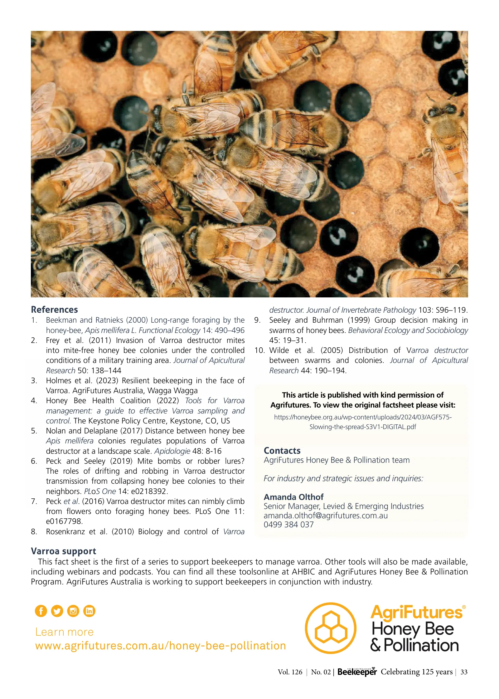

Vol. 126 | No. 02 |
Celebrating 125 years | 33
References
1.
Beekman and Ratnieks (2000) Long-range foraging by the
honey-bee, Apis mellifera L. Functional Ecology 14: 490–496
2. Frey et al. (2011) Invasion of Varroa destructor mites
into mite-free honey bee colonies under the controlled
conditions of a military training area. Journal of Apicultural
Research 50: 138–144
3. Holmes et al. (2023) Resilient beekeeping in the face of
Varroa. AgriFutures Australia, Wagga Wagga
4. Honey Bee Health Coalition (2022) Tools for Varroa
management: a guide to effective Varroa sampling and
control. The Keystone Policy Centre, Keystone, CO, US
5. Nolan and Delaplane (2017) Distance between honey bee
Apis mellifera colonies regulates populations of Varroa
destructor at a landscape scale. Apidologie 48: 8-16
6. Peck and Seeley (2019) Mite bombs or robber lures?
The roles of drifting and robbing in Varroa destructor
transmission from collapsing honey bee colonies to their
neighbors. PLoS One 14: e0218392.
7. Peck et al. (2016) Varroa destructor mites can nimbly climb
from flowers onto foraging honey bees. PLoS One 11:
e0167798.
8. Rosenkranz et al. (2010) Biology and control of Varroa
This article is published with kind permission of
Agrifutures. To view the original factsheet please visit:
https://honeybee.org.au/wp-content/uploads/2024/03/AGF575-
Slowing-the-spread-S3V1-DIGITAL.pdf
Contacts
AgriFutures Honey Bee & Pollination team
For industry and strategic issues and inquiries:
Amanda Olthof
Senior Manager, Levied & Emerging Industries
amanda.olthof@agrifutures.com.au
0499 384 037
Varroa support
This fact sheet is the first of a series to support beekeepers to manage varroa. Other tools will also be made available,
including webinars and podcasts. You can find all these toolsonline at AHBIC and AgriFutures Honey Bee & Pollination
Program. AgriFutures Australia is working to support beekeepers in conjunction with industry.
Learn more
www.agrifutures.com.au/honey-bee-pollination
destructor. Journal of Invertebrate Pathology 103: S96–119.
9. Seeley and Buhrman (1999) Group decision making in
swarms of honey bees. Behavioral Ecology and Sociobiology
45: 19–31.
10. Wilde et al. (2005) Distribution of Varroa destructor
between swarms and colonies. Journal of Apicultural
Research 44: 190–194.